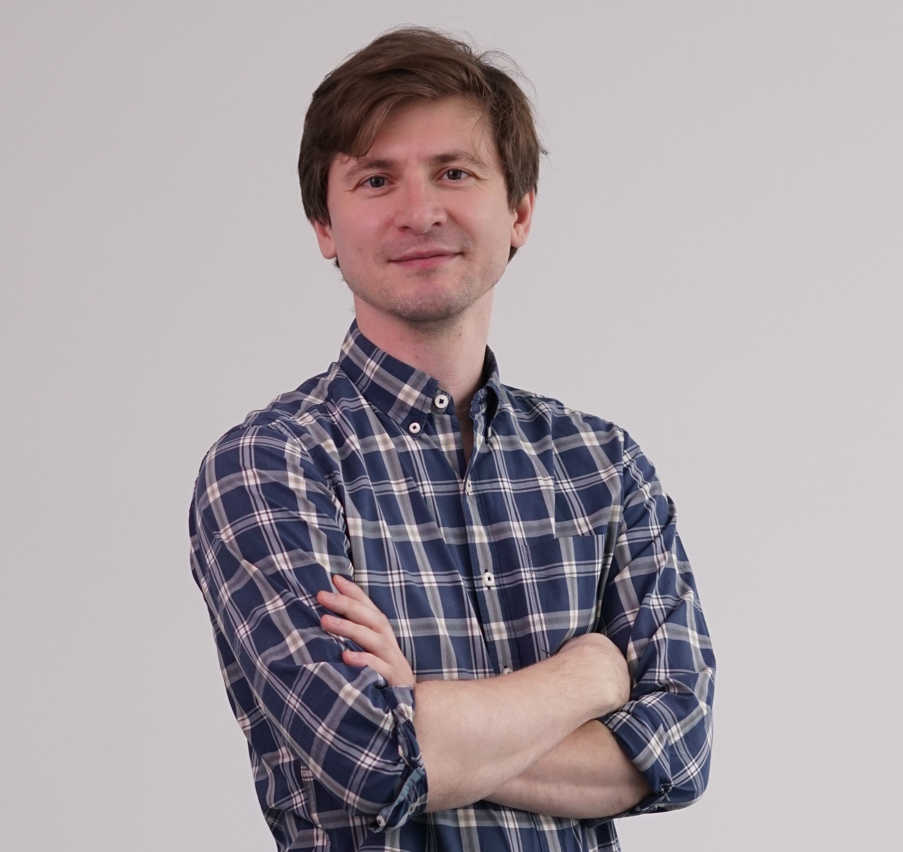

Hi, I'm Andrei.
Political scientist studying how people live in autocracies, organize for collective actions, and struggle to find some meaning in the absurd carnival of life
I study contentious politics and collective action in authoritarian regimes—how people organize, how states respond, and what happens in between. My work spans Russia and Central Asia, focusing on opposition movements, subnational coercion, urban conflicts, and environmental mobilization. More recently, I've been investigating community resilience and disaster response as well as parlimentary discourse on women's rights in Kazakhstan, and the political lives of Russia's wartime diaspora.
Before joining Nazarbayev University as Assistant Professor of Political Science, I spent two years at Yale's MacMillan Center and held positions at the Higher School of Economics, Perm State University, and the Russian Academy of Sciences. My research has appeared in Communist and Post-Communist Studies, Post-Soviet Affairs, Social Movement Studies, Democratizatsiya, and other journals.
I'm methodologically flexible. I work with survey experiments, event catalogues, and quantitative text analysis when the question calls for it, and with qualitative fieldwork and grounded case studies when it doesn't. I'd rather pick the right tool than defend a methodological camp.